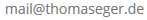

Als ambitionierter Hobby-Fotograf, bin ich ständig auf der Suche nach Motiven, die mich optisch ansprechen, beeindrucken oder Gefühle in mir wecken.
Erstaunen, Humor, Neugier und Spannung versuche ich in Bildern so festzuhalten, dass wir, als Betrachter, die besonderen Momente in unserem Leben im Nachhinein immer wieder erleben können.
Viel Spaß auf meinen Seiten!
Emails an:
